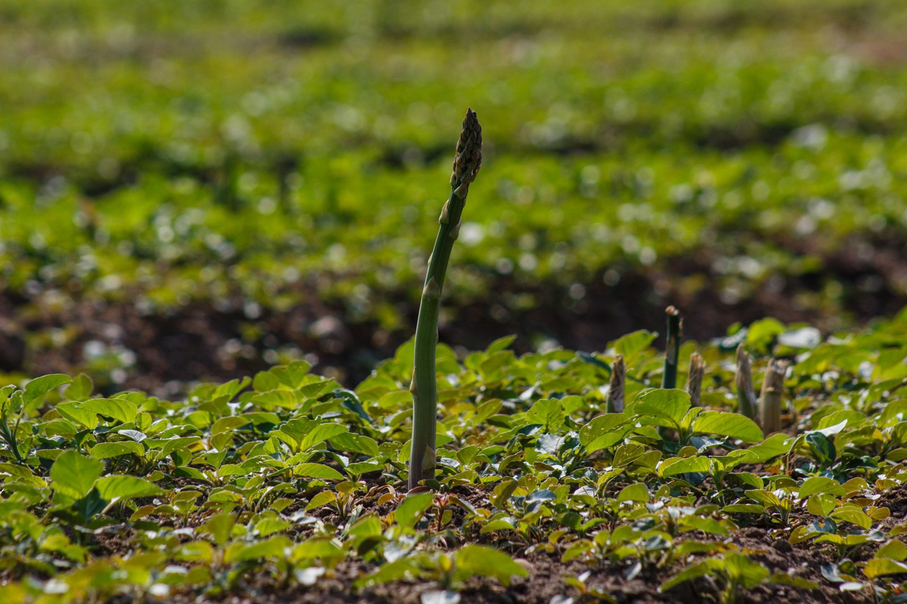

Tisková zprávaČeský chřest zahajuje sezónu 2026: sází na zelený chřest, bojuje se suchem a vrací Česku křenovou soběstačnost
Navzdory extrémně suchému jaru a rostoucím administrativním nákladům pěstitelé z Hostína u Vojkovic oficiálně zahajují sklizňovou sezónu.
Číst celý článek